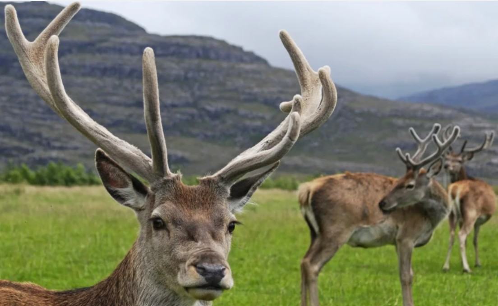
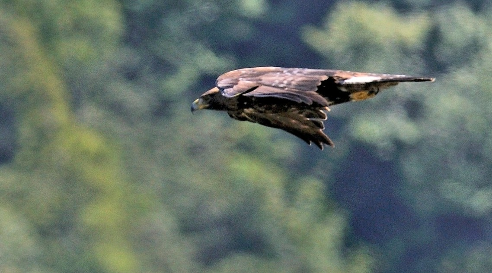
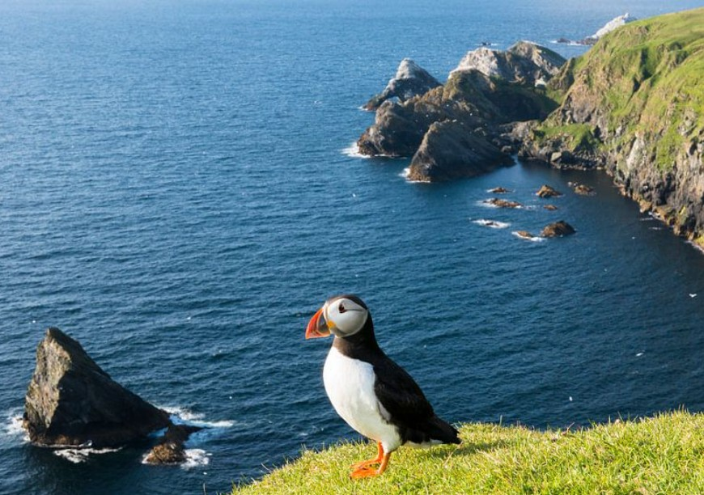
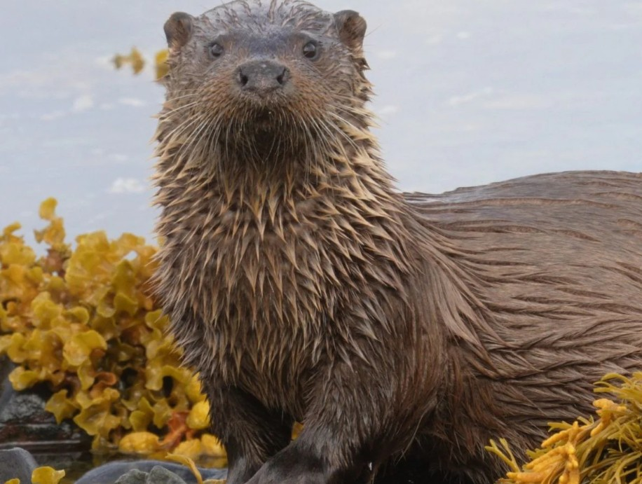
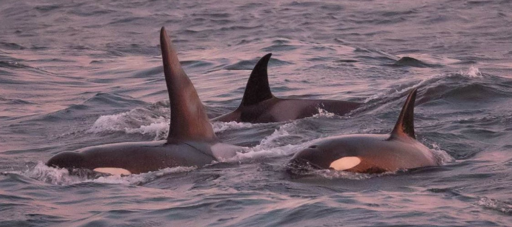
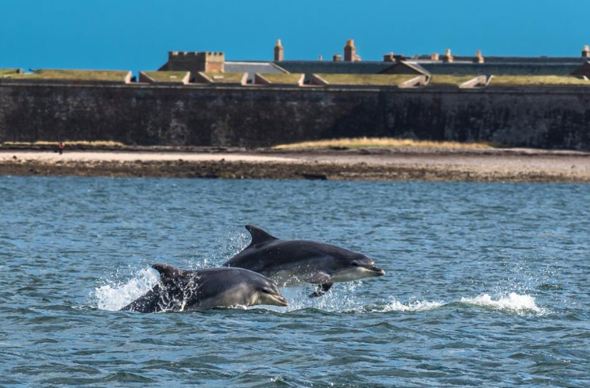

Cerfs rouges
Les cerfs rouges sont les plus grands mammifères terrestres du Royaume-Uni. On peut les observer dans de nombreuses régions d'Écosse.
- Île de Skye : Largement répandus, en particulier dans les régions de l'intérieur.
- Glen Coe : Fréquemment vus le long de la route principale.
Aigles royaux
L'Écosse abrite la majorité des aigles royaux du Royaume-Uni. Ils nichent souvent dans les falaises escarpées des Highlands.
- Île de Mull : Un des meilleurs endroits au monde pour les voir.
- Cairngorms National Park : On les aperçoit souvent au-dessus des montagnes.
Macareux moines
Ces oiseaux adorables reviennent sur les côtes écossaises de mars à août pour se reproduire.
- Île de Staffa : Un site d'observation très populaire, aussi connu pour ses colonnes de basalte.
- Fidra (East Lothian) : Visible depuis la côte.
Loutres
L'Écosse possède une population de loutres marines. Elles sont plus faciles à apercevoir tôt le matin ou au crépuscule, en bord de mer ou près des rivières.
- Shetland : Très grande densité de population, considérée comme l'un des meilleurs endroits au monde.
- Île de Skye : Fréquemment vues le long des côtes rocheuses.
Orques
Les orques passent par les eaux écossaises, en particulier au printemps et en été. Leur observation demande de la chance et de la patience.
- Shetland et Orkney : Les meilleurs endroits pour avoir une chance de les voir, en particulier en mai et juin.
- Caithness : Possibilité de les apercevoir depuis la côte nord.
Dauphins
Le dauphin à gros nez est un résident de longue date des eaux écossaises, particulièrement visible dans certaines baies.
- Moray Firth : La population de dauphins la plus au nord du monde, visible depuis la côte et en bateau.
- Île de Mull : Croisières en bateau pour l'observation des dauphins et des marsouins.